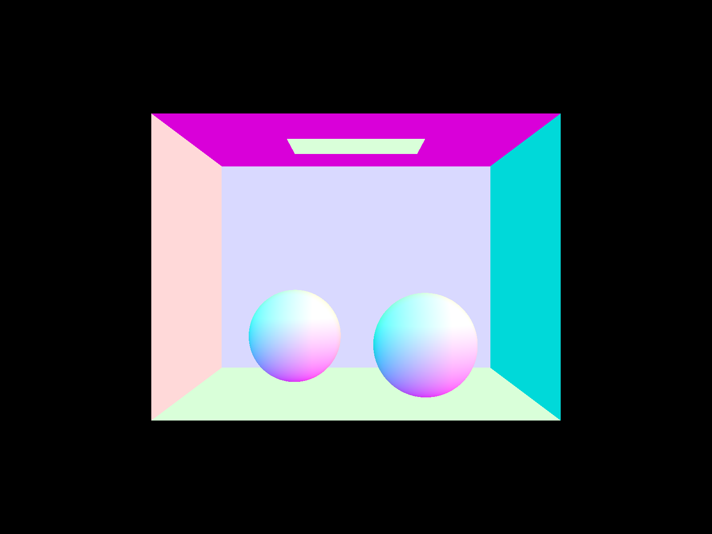
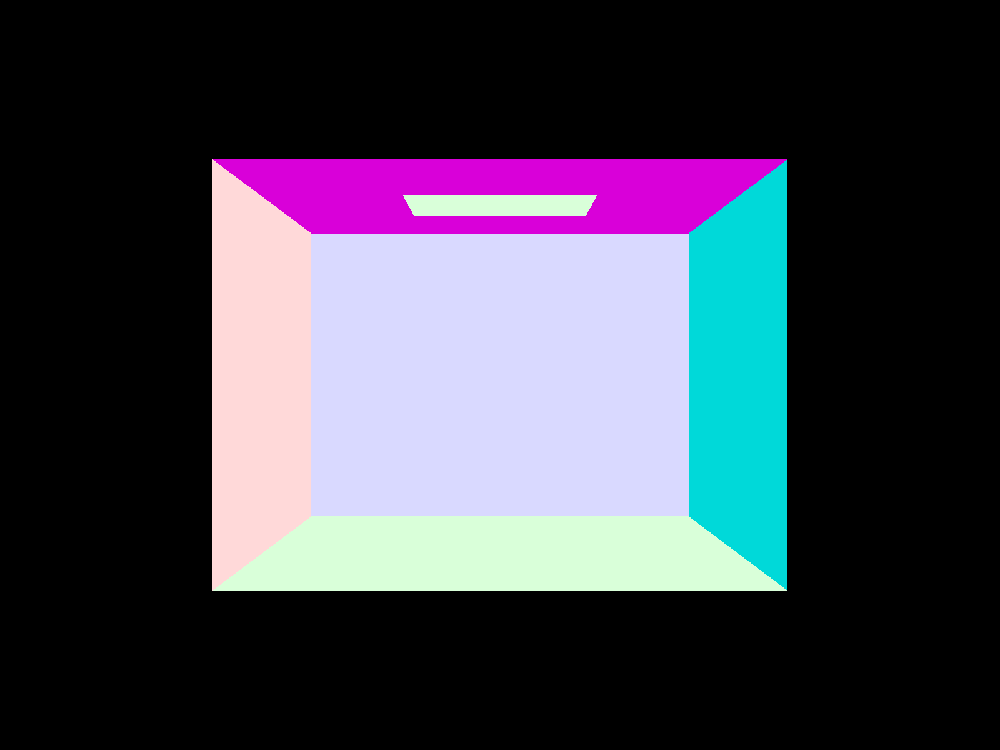
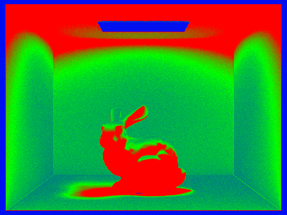

Overview
In this project, I implemented a path tracing algorithm to render scenes with light. We will be implementing direct and then global illumination for dae files. This assignment will also be using the techniques that we have seen in lecture to optimize the way ray tracing works such as using bounding volume hierrachy and adaptive sampling.
Task I: Ray Generation and Scene Intersection
Part 1: Filling in the sample loop
In this first part, I implemented thePathTracer::raytrace_pixel() function in pathtracer.cpp. The function creates $ns\_aa$ samples per pixel and traces a ray for each of those samples. In other words, the algorithm is generating $ns\_aa$ camera rays for a given pixel and then returns the average spectrum from these rays. The ray is generated using the generate_ray function, while the spectrum is calculated using the est_radiance_global_illumination. If the number of samples is 1, then we need to generate the ray through the center of the pixel. The location to the camera that is passed in to the generated ray has been scaled down to $[0,1]^2$ coordinates by dividing the $x$ and $y$ coordinate of the sample by the width and height of the pixel.
Part 2: Generating camera rays
In this section, I implemented the Camera::generate_ray() in camera.cpp. The function computes the position of the input sensor coordinate on the canonical sensor plane one unit away from the pinhole. As the camera is positioned at the origin, looks along the $−z$ axis, has the $+y$ axis as image space "up", we can define the sensor plane to have a bottom left corner of Vector3D(-tan(radians(hFov)*.5), -tan(radians(vFov)*.5),-1) and an upper right corner of Vector3D( tan(radians(hFov)*.5), tan(radians(vFov)*.5),-1). We then convert the input point to a point in the sensor coordinate. After, we convert the ray's direction in camera space and return the ray generated by that camera along the ray's direction calculated.
The returned value from Camera::generate_ray() is a ray object. A ray object takes in the origin of the ray and the direction of the ray. The ray is coming from the camera, so the origin is the position of the camera.
Part 3: Intersecting Triangles
I then implemented the function Triangle::intersect() in static_scene/triangle.cpp. To detect the intersection of a ray with a triangle, I decided to use the Moller-Trumbore intersection algorithm. This algorithm is now often used to compute the intersection as it doesn't require too many calculations compared to other intersection algorithms.
To detect whether a ray intersects with a triangle using the Moller-Trumbore algorithm, we represent the intersecting point in barycentric coordinates:
\[ P=wA+uB+vC \]where $w$, $u$, and $v$ are the barycentric coordinates of $A$, $B$, and $C$, which are the 3 vertices of the triangle we want to check the intersection.
We then know that $w=1-u-v$. Therefore, we can substitute these values in the equation above to get the following equations:
\[ \begin{align} P&=(1-u-v)A+uB+vC\\ &=A-uA-vA+uB+vC\\ &=A+u(B-A)+v(C-A) \end{align} \]Therefore, we now have the position of the intersecting point according to the barycentric coordinates $u$, $v$, the edges AB and AC of triangle ABC, and of the vertex A of the triangle ABC.
From the ray, we can also represent the intersection point as:
\[ P = O + tD \]where $t$ is the distance between $P$ and the ray's origin, $D$ is the direction of the ray, and $O$ is the origin of the ray.
Then if we replace $P$ in the equation above we get the following equation:
\[ \begin{align} &O + tD=A+u(B-A)+v(C-A)\\ \Leftrightarrow &O-A=-tD+u(B-A)+v(C-A) \end{align} \]Therefore in the equation above we have three unknowns ($t$, $u$, $v$) and three known terms (edge AB, edge AC, and direction D). Therefore, we can rearrange the equation as following:
\[ \begin{bmatrix} -D & e_1 & e_2 \end{bmatrix} \begin{bmatrix} t \\ u \\ v \end{bmatrix} \]where $e_1=(B-A)$ and $e_2=(C-A)$
By using Cramer's rule, we can then write the equation above as:
\[ \begin{bmatrix} t \\ u \\ v \end{bmatrix}=\frac{1}{\begin{bmatrix}\begin{vmatrix} -D & e_1 & e_2 \end{vmatrix}\end{bmatrix}} \begin{bmatrix} \begin{vmatrix} T & e_1 & e_2 \end{vmatrix}\\ \begin{vmatrix} -D & T & e_2 \end{vmatrix}\\ \begin{vmatrix} -D & e_1 & T \end{vmatrix} \end{bmatrix} \]Cramer's rule is an explicit formula for solving a system of linear equations and expresses the solution in terms of a determinant of the matrix and a matrix made up of the columns of the 1x3 matrix.
By rearranging the terms we get,
\[ \begin{bmatrix} t \\ u \\ v \end{bmatrix}=\frac{1}{(D \times e_2)\cdot e_1} \begin{bmatrix} (T \times e_1) \cdot e_2\\ (D \times e_2) \cdot T\\ (T \times e_1) \cdot D \end{bmatrix} \]I therefore implemented the above equation in my code and determined that the ray intersect the triangle if $t$ is between $min\_t$ and $max\_t$ (valid range of $t$), $u$ is between 0 and 1, and $v$ is between 0 and 1, and $u+v$ is less than 1.
Part 4: Intersecting Spheres
In this part I implemented Sphere::intersect() in static_scene/sphere.cpp. In order to test for intersection I solved the following equation via code:
where $a= d \cdot d$, $b=2(o-c)\cdot d$, $c=(o-c) \cdot (o-c)-R^2$.
In which $d$ is the ray's direction, $o$ is the origin of the ray, $c$ is the center of the sphere, and $R$ is the radius of the sphere.
The solutions to a quadratic equations are
\[ x_1=\frac{-b-\sqrt{b^2-4ac}}{2a} \text{ and } x_2=\frac{-b+\sqrt{b^2-4ac}}{2a} \]In order for there to be a solution we need to have the discrimant of the quadratic equation greater or equal to zero. When there is no solution the test function must return false. When there is only one solution (determinant is equal to zero) then we need to assign that solution to $t1$ and $t2$. One solution means that the ray is tangent to the sphere. When there is two solutions we assign the two solutions to $t1$ and $t2$ but make sure that the smaller of the two is assigned to $t1$. We also need to make sure that each of the $t$ values are within the $min\_t$ and $max\_t$ boundaries for that $t$ to be a valid solution.
The normal shading gives the following images on a few sample dae files:

dae/sky/CBspheres_lambertian.dae rendered in 2.2719s. |
dae/sky/CBgems.dae rendered in 33.7194s. |

dae/sky/CBempty.dae rendered in 2.0011s. |
Task II: Bounding Volume Hierarchy
In this part I implemented the bounding volume hierarchy to accelerate the ray tracing in more complex scenes. This technique is implemented by placing each object in the scene in a binary tree containing rectangular bounding boxes. From this data structure, we will be able to make our ray intersection algorithm run faster as we will only check ray intersection between bounding boxes instead of every single primitive in the scene.
By running the algorithm without optimization on cow.dae, the scene is rendered in about 162s.

dae/meshedit/cow.dae rendered in 70.1354s. |

dae/meshedit/maxplanck.dae rendered in 736.7218s. |
Part 1: Constructing the BVH
In this part, I implemented the function BVHAccel:construct_bvh() inside bvh.cpp to build the BVH. The function takes in a vector of primitives and a maximum leaf size configuration and needs to return the BVH tree created.
The algorithm first computes the bounding box of the primitives in prims in a loop by calling the get_bbox() function on each primitive and assigning it to the bbox variable. We also compute the centroid of each box that we assign to the centroid_box variable. For each bounding box, we create a BVH node. Then we check if there are at most $max\_leaf\_size$ primitives in the primitive list and if it is the case then this is a leaf node. We therefore simply return that node with the list of primitives assigned to it. If it is not the case we then need to seperate the primitives among the left and right children nodes. To decide on which side the primitives should go in the tree, we check whether their bounding box's centroid's coordinate in the chosen axis is less than or greater than the split point. The axis is selected by choosing the longest axis if the centroid bounding box. In other words, if the extent of $x$ is greater then the extent of $y$ and $z$ then the split must happen on $x$. If the extent of $y$ is greater then the extent of $x$ and $z$ then we split on $y$. If both cases are not true then we split on the $z$ axis. A heuristic fpr split is considered to be good if it reduces the time to check ray intersections. The heuristic that I implemented works well but could be further optimized.
We then split all the primitives into two vectors based on whether their bounding box's centroid's coordinate in the chosen axis is less than or greater than the split point. If both vectors have elements inside of them meaning that there are bounding boxes to the left and right of the choosen axis then we assign the left and right children nodes to these vectors. If one of the vectors do not contain any element then we need to split the other vector into two vectors by dividing the vector into 2 vectors in the middle and then assign the two generated lists to the left and right node. We then return the BVH node that we have created.
Part 2: Intersecting BBox
In this part, I implemented the BVHAccel::intersect() routines inside bvh.cpp. According to the slides, the intersecting point of a plane with a ray can be obtained from the following equation:
in which $p'$ is a point on the plane, $o$ is the origin of the ray, $N$ is the normal vector of the plane, and $d$ is the direction of the ray.
In BVHAccel::intersect(), I am first calculating the values of $t$ in each axis, so $x$, $y$, and $z$, using a derivation of the above formula that you can find below:
A ray misses a box when tmin > tmax where:
double tmin = std::max(std::max(txmin, tymin), tzmin);
double tmax = std::min(std::min(txmax, tymax), tzmax);
If we are not missing the bounding box, then we return true and assign t0 to the minimum t value and t1 to the maximum t value.
Part 3: Intersecting BVHAccel
In this section, I implemented the two BVHAccel::intersect() routines inside bvh.cpp. The function takes a ray and a BVH node. First, we check if the given ray misses the bounding box. If it is the case then we return false immediately. We also return false if t interval has an empty intersection with the ray's interval from min_t to max_t. If the current node is a leaf node then we test intersections with all primtives in that node and return the closest intersection. If the current node is not a leaf node then we recursively check for intersection for the left and right children nodes and return true if there is an intersection and false otherwise.
The bounding box hierarchy can be seen in the following screenshots:
dae/meshedit/cow.dae initial bounding box. |
dae/meshedit/cow.dae pressing right key. |

dae/meshedit/cow.dae pressing right key. |
dae/meshedit/cow.dae pressing right key. |
dae/meshedit/cow.dae pressing right key. |
dae/meshedit/cow.dae pressing right key. |
dae/meshedit/cow.dae pressing right key. |
dae/meshedit/cow.dae pressing right key. |
dae/meshedit/cow.dae pressing right key. |
Once the BVH is working, we are able to do normal shading for a large dae files that we couldn't render without the acceleration structure. The following are a couple of dae files using the BVH that we just implemented:

dae/meshedit/cow.dae rendered in 0.0285s. |

dae/meshedit/maxplanck.dae rendered in 0.3187s. |

dae/sky/CBlucy.dae rendered in 1.0664s. |
Through the images above we can see that the rendering is much faster using the BVH technique rather than checking the ray intersection for each primitive. The cow.dae file without any optimizations took 70.1354s to compile, however with BVH it can render in 0.0285s. This is therefore a speed improvement of $\frac{70.1354}{0.0285}=2460$ times. For dae/meshedit/maxplanck.dae, the scene renders in 736.7218s without any bounding boxes but otherwise renders in 0.3187s. This is therefore a speed improvement of $\frac{736.7218}{0.3187}=2311$ times. This speed improvement makes complete sense because we are now checking the intersections of a lot less objects than before. Now we are only checking the intersection of bounding boxes instead of the complex geometry of every single primitives. The geometry of a bounding box is easier to represent and therefore easier to check for intersection with a ray using the intersecting technique used above (we simply need to check if the ray intersects with each set of line in the bounding box). The scene graph that we generated is also a very efficient way to iterate through the primitives of a scene. I was not able to render CBlucy.dae in the non-optimized ray tracing as it took way too long to render on the instructional machines.
Task III: Direct Illumination
Part 1: Diffuse BSDF
In this part, I had to implement the DiffuseBSDF::f and DiffuseBSDF::sample_f in bsdf.cpp.
For the f function, according to the slide for a diffuse surface the bsdf is $\frac{reflectance}{\pi}$.
For the sample_f function, I simply get a sample that I assign to wi and then return the value from the f function that I just implemented.
Part 2: Direct lighting
In this part I had to implement estimate_direct_lighting_hemisphere in which we apply direct lighting on a point by sampling uniformly in a hemisphere and estimate_direct_lighting_importance in which we instead use importance sampling by sampling all the lights directly.
For estimate_direct_lighting_hemisphere we sample uniformly over a hemisphere around the point hit_p. For each ray intersecting a light source, we compute the incoming radiance of that light source that we convert into an outgoing radiance. From all of these radiances we average over all the samples and return the average radiance.
To be more specific, the function takes in a ray and an intersection point. We first make a coordinate system for a hit point with the normal vector aligned with the Z direction. This is needed because the BSDF functions require the normal to be (0,0,1). The hit point can be calculated as following using the ray equation hit_p = r.o + r.d * isect.t. The outgoing direction can be calculated as the opposite to the direction that the ray was traveling. The number of samples taken will be scene->lights.size() * ns_area_light to have the same total number of samples then estimate_direct_lighting_importance. We then iterate through each sample. A sample can be obtained using the function get_sample. We then compute the bsdf using the f function and transform the direction of the ray to world space using the following equation wi_world = o2w * wi. A ray is then created using these parameters created and check for intersections using the intersect function of the bvh. If it hits something we accumulate the total spectrum by multiplying the intersected material's emitted light with the bsdf calculate as well as multipying by the cosine of the angle between a direction vector w_in and the normal vector and multiply by the PDF which is $2\pi$ for a hemishphere that has uniform distribution. We then divide the total accumulated spectrum by the number of samples and return that value.
For importance sampling, we sum over each light source in the scene by sampling each point on the light source and then we compute the radiance from the sampled directions. As in hemisphere sampling, we then convert the incoming radiance to an outgoing radiance using the bsdf. The main difference between the two techniques is where we take the samples in the scene. In hemisphere we sample over a hemisphere while in importance light sampling we sample over the points of the light source.
When we iterate over each light source, we check if the light source is a delta light. If it is the case then we only sample once as all the samples would be the same. We then take all the samples for a given light source by calling the sample_l function. If the z coordinate of w_in is negative then we can continue the loop since we know the sampled light point lies behind the surface. Then we cast a ray from the intersection point to towards the light to see if it intersects any point in the scene. The max_t will be the distance to the light as we do not care about intersections behind the light source. If the ray doesn't intersect the scene then we can calculate the bsdf value the bsdf value at w_out and w_in multiply by the cosine of the angle between a direction vector w_in and the normal vector and divide by the pdf to find all of the outgoing radiances. Once we have found all the outgoing radiances we sum them up and then divide by the number of samples to get the average outgoing radiance.
For uniform hemisphere sampling we obtain the following image using the command line ./pathtracer -t 8 -s 16 -l 8 -m 6 -H -f CBbunny_16_8.png -r 480 480 ../dae/sky/CBbunny.dae and ./pathtracer -t 8 -s 64 -l 32 -m 6 -H -f CBbunny_64_32.png -r 480 360 ../dae/sky/CBbunny.dae:

dae/sky/CBbunny.dae rendered in 13.0623s. |
dae/sky/CBbunny.dae rendered in 192.8449s. |
For uniform importance sampling we obtain the following image by running the command line ./pathtracer -t 8 -s 64 -l 32 -m 6 -f dragon_64_32.png -r 480 480 ../dae/sky/dragon.dae and ./pathtracer -t 8 -s 64 -l 32 -m 6 -f bunny_64_32.png -r 480 360 ../dae/sky/CBbunny.dae:

dae/sky/dragon.dae rendered in 138.9783s. |
dae/sky/CBbunny.dae rendered in 162.1165s. |
We can see that the images generated using hemisphere sampling are a lot more noisy then the images generated using uniform importance sampling. The images generated using hemisphere sampling are also slightly darker than the ones generated with importance sampling. Hemisphere sampling is also much slower than importance sampling as evaluating all the points on the hemisphere of each hit point is expensive. Additionally we can see that the errors generated in the hemishphere sampling image have pixels that are either too bright or too dark. The noisness in hemisphere sampling is due to the fact that we are sampling rays using the get_sample function over a hemisphere. The rays sampled over the hemisphere may not be intersecting with the light. When there is a low sample rate as a result, these rays missing the light are therefore causing black dots in the image because a lot of these rays are missing the light. To summarize the hemisphere sampling is sampling over the brdf by generating a hemisphere. The direct importance sampling samples over the light source. As a result, each ray in direct importance sampling has a light and the rendered image is smooth. Using hemisphere sampling, we can't render scenes with point light sources (like bunny.dae and dragon.dae), since our outgoing rays will never intersect with the meshes.
For uniform importance sampling by varying the number of light rays with 1, 4, 16, and 64 light rays (the -l flag) and 1 sample per pixel (the -s flag) :
dae/sky/CBbunny.dae rendered in 0.1204s with 1 light ray. |
dae/sky/CBbunny.dae rendered in 0.3262s with 4 light ray. |
dae/sky/CBbunny.dae rendered in 1.1790s with 6 light ray. |

dae/sky/CBbunny.dae rendered in 4.6184s with 64 light ray. |
We can see through these images that if we take more sample then the amount of noise is going to get reduced. The shadows are also softer when using more rays (as it decreases the variance). We have seen in the slides that variance decrease linearly with the number of samples for a random variable. In our case of importance smapling, if we increase the number of light ray than we are going to decrease the variance and therefore reduce noise in images.
The formula of variance to show that increasing the number of samples will reduce noise is the following (because variance decreases linearly with the number of samples):
\[ V[\frac{1}{N}\sum_{i=1}^NY_i]=\frac{1}{N^2}\sum_{i=1}^NV[Y_i]=\frac{1}{N^2}NV[Y]=\frac{V[Y]}{N} \]Task IV: Global Illumination
In this part we will implement full global illumination. In other words, we will need to fill the functions est_radiance_global_illumination, zero_bounce_radiance, one_bounce_radiance, and at_least_one_bounce_radiance.
For zero_bounce_radiance, we simply need to use the get_emission function to get the light emitted from the intersecting point.
For one_bounce_radiance, we simply call one of the direct illumination functions depending on the value of direct_hemisphere_sample. This function will be used to calculate the light generetated directly by the rays.
For at_least_one_bounce_radiance, we need to calculate the indirect rays by sampling the BSDF, performing Russian roulette step, and returning a recursively traced ray when applicable.
The at_least_one_bounce_radiance function takes as arguments a ray and an intersection. We first transform the world coordinates into local coordinate. We then take a sample from the surface BSDF at the intersection point using isect.bsdf->sample_f(). We can now do the russian roulette in which we decide to randomly stop a ray depending on the probability $p$. If we terminate the ray we just return an empty spectrum. If we do not stop it with the russian roulette we check if the depth of the ray is higher than 1. If it is higher than 1 than we generate a ray that has a depth that is 1 less than the incoming ray. If there is an intersection, then we accumulate the radiance in the L_out variable. The radiance is calculated by recursively calling the at_least_one_bounce_radiance function and multiplying it by the bsdf and the cosine of the angle between the normal vector and the incoming ray. From the slides we then divide that number by the pdf and the russian roulette probability. If the max_ray_depth is greater than 1 then we always try to trace the first ray without looking at the russian roulette probability.
The following is the dae/sky/CBspheres_lambertian.dae scene with only direct and only indirect illumination:
dae/sky/CBspheres_lambertian.dae rendered in 73.8418s with only direct illumination. |
dae/sky/CBspheres_lambertian.dae rendered in 447.6228ss with only indirect illumination. |
We can see that the scene with only the direct rays have some colors that are very sharp, while the indirect lighting image produces color bleeding. The shadows in the indirect lighting scene are also much smoother and smaller. The indirect light is also much more pixelated as we are using the russian roulette in which the rays bounces everywhere in the scene and stops at a random depth. We can also see that the top of the spheres are black in the indirect scene as the light from the top of the sphere is due to the direct light.
The following is the same scene dae/sky/CBspheres_lambertian.dae with both direct and indirect lighting:
dae/sky/CBspheres_lambertian.dae rendered in 433.5837s with direct and indirect illumination. |
The combined scene renders the image of both the direct rays and indirect rays. The combined scene is as a result much brighter.
Here is the CBbunny.dae rendered views with max_ray_depth equal to 0, 1, 2, 3, and 100 (the -m flag).
dae/sky/CBbunny.dae rendered with max_ray_depth=0 in 540.5301s. |
dae/sky/CBbunny.dae rendered with max_ray_depth=1 in 385.4155s. |
dae/sky/CBbunny.dae rendered with max_ray_depth=2 in 387.5450s. |
dae/sky/CBbunny.dae rendered with max_ray_depth=3 in 492.9880s. |
dae/sky/CBbunny.dae rendered with max_ray_depth=100 in 561.0243s. |
When varying the max ray depth, the images generated are very similar. I am having difficulties see any differences between the generated images. Increasing the max ray depth will increase the amount of time needed to render an image as more rays will be drawn in the scene. By looking very closely at the images, some of the shadows may also be more smooth. This may be due to the fact that rays are bouncing more and therefore covering a larger area in the scene.
I then picked the dae/sky/CBspheres_lambertian.dae scene and rendered it with various sample-per-pixel rates, including 1, 2, 4, 8, 16, 64, and 1024, using 4 light rays:
dae/sky/CBspheres_lambertian.dae rendered in 2.8027s with 1 sample-per-pixel. |
dae/sky/CBspheres_lambertian.dae rendered in 5.6261s with 2 sample-per-pixel. |
dae/sky/CBspheres_lambertian.dae rendered in 10.1463s with 4 sample-per-pixel. |
dae/sky/CBspheres_lambertian.dae rendered in 20.2302s with 8 sample-per-pixel. |
dae/sky/CBspheres_lambertian.dae rendered in 42.5675s with 16 sample-per-pixel. |
dae/sky/CBspheres_lambertian.dae rendered in 165.3106s with 64 sample-per-pixel. |
dae/sky/CBspheres_lambertian.dae rendered in 2622.0377s with 1024 sample-per-pixel. |
We can see that by increasing the sample-per-pixel the images get a lot less noisy then before. As mentioned above this is due to the fact that increasing the number of samples reduces the variance and as a result reduces the noise.
Task V: Adaptive Sampling
In this part we are going to implement adaptive sampling to reduce noise without having to use a fixed high number of samples per pixel. Adaptive sampling changes the sample rate based on whether or not the pixel has converged as we trace rays through it. The pixel's convergence is calculated by the following formula:
\[ I=1.96 \cdot \frac{\sigma}{\sqrt{n}} \]We know that $I$ is small when the sample variance is small. We conclude that the pixel has converged when the following equation is met:
\[ I \leq maxTolerance \cdot \mu \]In my code the accumulated sample illuminance is tracked in the $s_1$ and $s_2$ variables. $s_1$ and $s_2$ are defined as following:
\[ s_1=\sum_{k=1}^nx_k \] \[ s_2=\sum_{k=1}^nx_k^2 \]At each iteration, I am calculating the average using the formula:
\[ \mu = \frac{s_1}{n} \]The variance is calulated using the formula:
\[ \sigma^2=\frac{1}{n-1}\cdot(s_2-\frac{s_1^2}{n}) \]We check for the pixel convergence for every $samplesPerBatch$ number of samples that we iterate to make the code more efficient.
The sample rate image is computed by filling the variable $sampleCountBuffer$ with the number of samples generated for each pixel. This is a 1D array so the position of a pixel with coordinates $x$ and $y$ in the array is x + (y * sampleBuffer.w).
The following image is dae/sky/CBbunny.dae rendered with 2048 samples per pixel, 1 sample per light, and 5 for max ray depth using adaptive sampling:
dae/sky/CBbunny.dae rendered with in 1450.5718s. |
The sample rate of each pixel for the above image is the following:

dae/sky/CBbunny.dae. |